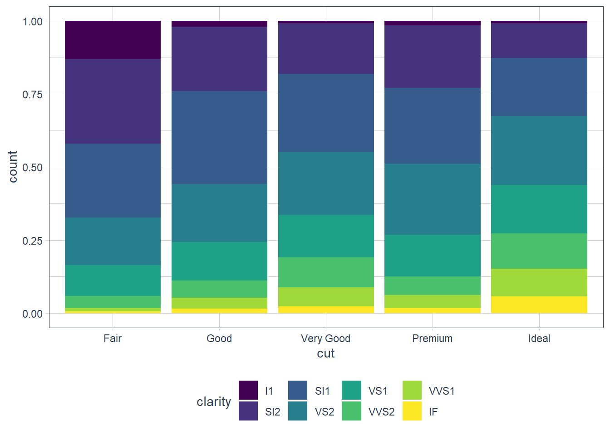

Chapter 1 - Data Viz with ggplot
Vebash Naidoo
10/08/2020
Last updated: 2020-11-01
Checks: 7 0
Knit directory: r4ds_book/
This reproducible R Markdown analysis was created with workflowr (version 1.6.2). The Checks tab describes the reproducibility checks that were applied when the results were created. The Past versions tab lists the development history.
Great! Since the R Markdown file has been committed to the Git repository, you know the exact version of the code that produced these results.
Great job! The global environment was empty. Objects defined in the global environment can affect the analysis in your R Markdown file in unknown ways. For reproduciblity it’s best to always run the code in an empty environment.
The command set.seed(20200814) was run prior to running the code in the R Markdown file. Setting a seed ensures that any results that rely on randomness, e.g. subsampling or permutations, are reproducible.
Great job! Recording the operating system, R version, and package versions is critical for reproducibility.
Nice! There were no cached chunks for this analysis, so you can be confident that you successfully produced the results during this run.
Great job! Using relative paths to the files within your workflowr project makes it easier to run your code on other machines.
Great! You are using Git for version control. Tracking code development and connecting the code version to the results is critical for reproducibility.
The results in this page were generated with repository version a8057e7. See the Past versions tab to see a history of the changes made to the R Markdown and HTML files.
Note that you need to be careful to ensure that all relevant files for the analysis have been committed to Git prior to generating the results (you can use wflow_publish or wflow_git_commit). workflowr only checks the R Markdown file, but you know if there are other scripts or data files that it depends on. Below is the status of the Git repository when the results were generated:
Ignored files:
Ignored: .Rproj.user/
Untracked files:
Untracked: analysis/images/
Untracked: code_snipp.txt
Note that any generated files, e.g. HTML, png, CSS, etc., are not included in this status report because it is ok for generated content to have uncommitted changes.
These are the previous versions of the repository in which changes were made to the R Markdown (analysis/ch1_ggplot.Rmd) and HTML (docs/ch1_ggplot.html) files. If you’ve configured a remote Git repository (see ?wflow_git_remote), click on the hyperlinks in the table below to view the files as they were in that past version.
| File | Version | Author | Date | Message |
|---|---|---|---|---|
| html | 0aef1b0 | sciencificity | 2020-10-31 | Build site. |
| html | bdc0881 | sciencificity | 2020-10-26 | Build site. |
| html | 8224544 | sciencificity | 2020-10-26 | Build site. |
| html | 2f8dcc0 | sciencificity | 2020-10-25 | Build site. |
| html | 61e2324 | sciencificity | 2020-10-25 | Build site. |
| html | 570c0bb | sciencificity | 2020-10-22 | Build site. |
| html | cfbefe6 | sciencificity | 2020-10-21 | Build site. |
| html | 4497db4 | sciencificity | 2020-10-18 | Build site. |
| html | 1a3bebe | sciencificity | 2020-10-18 | Build site. |
| html | ce8c214 | sciencificity | 2020-10-16 | Build site. |
| html | 1fa6c06 | sciencificity | 2020-10-16 | Build site. |
| html | 9ae5861 | sciencificity | 2020-10-13 | Build site. |
| html | 76c2bc4 | sciencificity | 2020-10-10 | Build site. |
| html | 226cd16 | sciencificity | 2020-10-10 | Build site. |
| Rmd | ae71e8e | sciencificity | 2020-10-10 | added Ch 4 section |
| html | ceae495 | sciencificity | 2020-09-17 | Build site. |
| html | b8fde7d | sciencificity | 2020-09-13 | Build site. |
| html | 0bab89d | sciencificity | 2020-09-12 | Build site. |
| Rmd | a47f1a3 | sciencificity | 2020-09-12 | completed ggplot exercises |
| html | 720a89b | sciencificity | 2020-09-02 | Build site. |
| html | 4612bb8 | sciencificity | 2020-09-02 | Build site. |
| html | d627f04 | sciencificity | 2020-08-26 | Build site. |
| Rmd | 50ff8a5 | sciencificity | 2020-08-26 | Corrected page flow |
| html | b3395ae | sciencificity | 2020-08-23 | Build site. |
| Rmd | e684831 | sciencificity | 2020-08-23 | Added latest learnings |
| html | 6373aef | sciencificity | 2020-08-23 | Build site. |
| Rmd | b96b2ff | sciencificity | 2020-08-23 | Latest additions |
| html | 28dbedf | sciencificity | 2020-08-23 | Build site. |
| html | 5c5ee45 | sciencificity | 2020-08-23 | Build site. |
| Rmd | 865e66f | sciencificity | 2020-08-23 | Ch1 more complete, plus started Ch2 |
| html | 051fc23 | sciencificity | 2020-08-22 | Build site. |
| Rmd | 4294654 | sciencificity | 2020-08-22 | More of Chapter 1 done |
| html | 4045090 | sciencificity | 2020-08-21 | Build site. |
| Rmd | 7084552 | sciencificity | 2020-08-21 | Corrected image files |
| html | f8f5ce1 | sciencificity | 2020-08-21 | Build site. |
| Rmd | 60d834a | sciencificity | 2020-08-21 | Added more exercise solns to Chapter 1 |
| html | 589a0ca | sciencificity | 2020-08-18 | Build site. |
| html | 801c1d7 | sciencificity | 2020-08-18 | Build site. |
| Rmd | f28b0d3 | sciencificity | 2020-08-18 | Added more exercise solns to Chapter 1 |
| html | 9ea8280 | sciencificity | 2020-08-14 | Build site. |
| Rmd | 82f2e94 | sciencificity | 2020-08-14 | Add Chapter 1 |
| html | e2cdeb5 | sciencificity | 2020-08-14 | Build site. |
| Rmd | 6c088b5 | sciencificity | 2020-08-14 | Add Chapter 1 |
Do cars with big engines use more fuel than cars with small engines?
Hypothesis: Cars with bigger engines use more fuel, i.e. the fuel efficiency declines as the engine size gets bigger. If miles per gallon was on the y-axis and engine size on the x-axis we would see a decreasing trend.
ggplot2::mpg# A tibble: 234 x 11
manufacturer model displ year cyl trans drv cty hwy fl class
<chr> <chr> <dbl> <int> <int> <chr> <chr> <int> <int> <chr> <chr>
1 audi a4 1.8 1999 4 auto(l~ f 18 29 p comp~
2 audi a4 1.8 1999 4 manual~ f 21 29 p comp~
3 audi a4 2 2008 4 manual~ f 20 31 p comp~
4 audi a4 2 2008 4 auto(a~ f 21 30 p comp~
5 audi a4 2.8 1999 6 auto(l~ f 16 26 p comp~
6 audi a4 2.8 1999 6 manual~ f 18 26 p comp~
7 audi a4 3.1 2008 6 auto(a~ f 18 27 p comp~
8 audi a4 quat~ 1.8 1999 4 manual~ 4 18 26 p comp~
9 audi a4 quat~ 1.8 1999 4 auto(l~ 4 16 25 p comp~
10 audi a4 quat~ 2 2008 4 manual~ 4 20 28 p comp~
# ... with 224 more rows# create coordinate system
ggplot(data = mpg, aes(x = displ,
y = hwy))
ggplot(data = mpg) +
geom_point(mapping = aes(x = displ,
y = hwy))
My hypothesis has been confirmed.
num_rows <- nrow(mtcars)
num_cols <- ncol(mtcars)
ex4_plot <- ggplot(data = mpg,
aes(x = hwy,
y = cyl)) +
geom_point()Exercises
Run
ggplot(data = mpg). What do you see?
Ans: An empty canvas of a plot. If you add theaes(x = xx, y = yy)you will see an empty canvas with the axes drawn.How many rows are in
mtcars? How many columns?
Ans: Number of rows is 32, cols is 11.What does the
drvvariable describe? Read the help for?mpgto find out.
Ans: ‘The type of drive train, where f = front-wheel drive, r = rear wheel drive, 4 = 4wd’Make a scatterplot of
hwyvscyl.ex4_plot
What happens if you make a scatterplot of
classvsdrv? Why is the plot not useful?ggplot(data = mpg, aes(x = class, y = drv)) + geom_point() These are 2 categorical variables here so this isn’t very useful.
These are 2 categorical variables here so this isn’t very useful.
Aesthetics
You can give extra information about your dataset by mapping data to aesthetics like size, colour, shape.
ggplot(data = mpg) +
geom_point(mapping = aes(x = displ, y = hwy,
colour = class))
When you put a feature against an aesthetic ggplot will assign a unique level (here colour to each class of the feature) -> this process is called scaling.
ggplot(data = mpg) +
geom_point(aes(x = displ, y = hwy,
size = class))
Mapping a unordered variable like class to an ordered aesthetic like size is not a good idea, and we get a warning here.
ggplot(data = mpg) +
geom_point(aes(x = displ, y = hwy,
alpha = class))
alpha is another aesthetic that we can use.
ggplot(data = mpg) +
geom_point(aes(x = displ, y = hwy,
shape = class))
Warning: The shape palette can deal with a maximum of 6 discrete values because
more than 6 becomes difficult to discriminate; you have 7. Consider
specifying shapes manually if you must have them.
Warning: Removed 62 rows containing missing values (geom_point).

ggplot only uses 6 shapes at a time, so we’re missing suv! When mapping to aesthetics think carefully about which aesthetic makes sense.
If you look at the colour = class plot vs the shape = class plot you may well think - it looks like previously labelled suv is now being considered to be pickup!? There are many points and the points get plotted on top of each other - if you look near displ = 5 and hwy = 12 notice that there is an pickup point there … previously there was an suv point there. Let’s jitter the data so that the points lie a little away from each other to show that there’s not any issue with ggplot, instead the data lying on top of each other shows the last class.
ggplot(data = mpg) +
geom_point(aes(x = displ, y = hwy,
colour = class))
ggplot(data = mpg) +
geom_point(aes(x = displ, y = hwy,
shape = class))
ggplot(data = mpg) +
geom_jitter(aes(x = displ, y = hwy,
colour = class))
ggplot(data = mpg) +
geom_jitter(aes(x = displ, y = hwy,
shape = class))
Occassionally you may want to change all the points sizes uniformly (irrespective of any other data feature) - in this case you may put the aesthetic on the outside of the aes().
ggplot(data = mpg) +
geom_point(aes(x = displ, y = hwy),
colour = "blue")
ggplot(data = mpg) +
geom_point(aes(x = displ,
y = hwy),
size = 4)
Exercises
Exercise 1
What’s gone wrong with this code? Why are the points not blue?
ggplot(data = mpg) +
geom_point(mapping = aes(x = displ, y = hwy, color = "blue")) The
The color attribute maps to a static colour blue and yet appears within aes(). To correct, put colour = 'blue' outside the aes()
ggplot(data = mpg) +
geom_point(mapping = aes(x = displ,
y = hwy),
color = "blue")
Exercise 2
Which variables in mpg are categorical? Which variables are continuous? (Hint: type ?mpg to read the documentation for the dataset). How can you see this information when you run mpg?
manufacturer, model, trans, drv, fl and class are categories (I also think cyl may be considered a category since it takes on 4 values based on a limited number of cylinders); displ, year, cty, hwy, cyl are continuous. You can convert mpg to a tibble (if it is not already) and check the types using glimpse().
glimpse(mpg)Rows: 234
Columns: 11
$ manufacturer <chr> "audi", "audi", "audi", "audi", "audi", "audi", "audi"...
$ model <chr> "a4", "a4", "a4", "a4", "a4", "a4", "a4", "a4 quattro"...
$ displ <dbl> 1.8, 1.8, 2.0, 2.0, 2.8, 2.8, 3.1, 1.8, 1.8, 2.0, 2.0,...
$ year <int> 1999, 1999, 2008, 2008, 1999, 1999, 2008, 1999, 1999, ...
$ cyl <int> 4, 4, 4, 4, 6, 6, 6, 4, 4, 4, 4, 6, 6, 6, 6, 6, 6, 8, ...
$ trans <chr> "auto(l5)", "manual(m5)", "manual(m6)", "auto(av)", "a...
$ drv <chr> "f", "f", "f", "f", "f", "f", "f", "4", "4", "4", "4",...
$ cty <int> 18, 21, 20, 21, 16, 18, 18, 18, 16, 20, 19, 15, 17, 17...
$ hwy <int> 29, 29, 31, 30, 26, 26, 27, 26, 25, 28, 27, 25, 25, 25...
$ fl <chr> "p", "p", "p", "p", "p", "p", "p", "p", "p", "p", "p",...
$ class <chr> "compact", "compact", "compact", "compact", "compact",...Exercise 3
Map a continuous variable to color, size, and shape. How do these aesthetics behave differently for categorical vs. continuous variables?
ggplot(data = mpg) +
geom_point(aes(x = displ, y = hwy,
colour = cyl))
ggplot(data = mpg) +
geom_point(aes(x = displ, y = hwy,
colour = cty))
The colours are scaled from the lowest to the highest value using dark to light blue.
Exercise 4
What happens if you map the same variable to multiple aesthetics?
ggplot(data = mpg) +
geom_point(aes(x = displ, y = hwy,
colour = class,
size = class)) Here we have both
Here we have both colour and size mapped to class. The plot offers no new information with the second aesthetic so I’d consider it a poor plot. You should use aesthetics mapped to different features in your data to meet with the Axiom that ‘The greatest value of a picture is when it forces us to notice what we never expected to see. –John Tukey’ as mentioned in the beginning of the Aesthetic Mappings section!
Exercise 5
What does the stroke aesthetic do? What shapes does it work with? (Hint: use ?geom_point)
Tip: Did you know that when you call ?geom_point you can go to an example and highlight it, press ‘Ctrl + Enter’ and it will place that example in your console and run it?


# For shapes that have a border (like 21), you can colour the inside and
# outside separately. Use the stroke aesthetic to modify the width of the
# border
ggplot(mtcars, aes(wt, mpg)) +
geom_point(shape = 2, colour = "black", fill = "white", size = 5, stroke = 5)
ggplot(mtcars, aes(wt, mpg)) +
geom_point(shape = 23, colour = "black", fill = "white", size = 5, stroke = 3)

Stroke changes the border width as described in the example comment, and works with any shape that has a border hence will work with shapes 0-14, and 21-24. An example of each is above.
Exercise 6
What happens if you map an aesthetic to something other than a variable name, like aes(colour = displ < 5)? Note, you’ll also need to specify x and y.
ggplot(data = mpg) +
geom_point(mapping =
aes(x = displ,
y = hwy,
colour =
(displ
Points are split according to the criteria displ < 5 and are coloured differently depending on what value they have for displacement.
Facets
Another way to add information on your plot is to use facets.
facet_wrap()allows faceting by a single variable- First argument is a formula
~ var_name - Variable passed in should be discrete.
- First argument is a formula
facet_grid()allows the faceting by 2 variables.var_name1 ~ var_name2
ggplot(data = mpg) +
geom_point(mapping = aes(x = displ,
y = hwy)) +
facet_wrap(~ class, nrow = 2)
ggplot(data = mpg) +
geom_point(mapping = aes(x = displ,
y = hwy)) +
facet_grid(drv ~ class)Exercises
Facets: Exercise 1
What happens if you facet on a continuous variable?
ggplot(data = mpg) +
geom_point(aes(x = displ,
y = hwy)) +
facet_wrap(~ cty)The plot is created but it doesn’t make sense to split our data by a continuous variable.
Facets: Exercise 2
What do the empty cells in plot with facet_grid(drv ~ cyl) mean? How do they relate to this plot?
The empty spots refer to that drv and cyl combination being missing.
ggplot(data = mpg) +
geom_point(mapping = aes(x = drv, y = cyl))
It relates to the above in that you can see that the drv = 4; cyl = 5 combination has no observations. This is also the case in the faceted plot.
Facets: Exercise 3
What plots does the following code make? What does . do?
ggplot(data = mpg) +
geom_point(mapping = aes(x = displ, y = hwy)) +
facet_grid(drv ~ .)The facet_grid (drv ~ .) facets the drv categories into rows. It says facet this plot by drv as row panels but I don’t want anything as column panels (hence the .).
ggplot(data = mpg) +
geom_point(mapping = aes(x = displ, y = hwy)) +
facet_grid(. ~ cyl)The facet_grid(. ~ cyl) facets the cyl categories into columns. It says facet this plot by cyl as column panels but I don’t want anything as row panels (hence the .).
Facets: Exercise 4
Take the first faceted plot in this section:
ggplot(data = mpg) +
geom_point(mapping = aes(x = displ, y = hwy)) +
facet_wrap(~ class, nrow = 2)
What are the advantages to using faceting instead of the colour aesthetic? What are the disadvantages? How might the balance change if you had a larger dataset?
ggplot(data = mpg) +
geom_point(mapping = aes(x = displ, y = hwy)) +
facet_wrap(~ class, nrow = 2)
What are the advantages to using faceting instead of the colour aesthetic?
You can see the patterns in each class much easier.What are the disadvantages?
You may lose sight of the overall trend across all observations, and comparing categories becomes more “work”.How might the balance change if you had a larger dataset?
If you have many categories it becomes overwhelming.
Facets: Exercise 5
Read ?facet_wrap. What does nrow do? What does ncol do? What other options control the layout of the individual panels? Why doesn’t facet_grid() have nrow and ncol arguments?
From the help page these are the main aspects that alter your visuals.
nrowandncolspecify the number of rows or columns you’re looking for in your plot.scales: Should scales be fixed (“fixed”, the default), free (“free”), or free in one dimension (“free_x”, “free_y”)?- Use the
labelleroption to control how labels are printed. - Use
strip.positionto display the facet labels at the side of your choice. Setting it tobottommakes it act as a subtitle for the axis. This is typically used with free scales and a theme without boxes around strip labels.
Facets: Exercise 6
When using facet_grid() you should usually put the variable with more unique levels in the columns. Why?
I would think this orientation makes best use of the screen real estate available.
Geometric Objects


ggplot(data = mpg) +
geom_point(mapping = aes(x = displ, y = hwy))
ggplot(data = mpg) +
geom_smooth(mapping = aes(x = displ, y = hwy))
The above plots are made using the same data, but the geoms are different. To change the plot type i.e. bar, boxplot, line etc. you just change the geom you add to ggplot. The aesthetics that work with each geom is different however. E.g. you may set the linetype of a line, but you can’t change the shape of a line.
ggplot(data = mpg) +
geom_line(aes(x = displ, y = hwy, linetype = drv))ggplot(data = mpg) +
geom_smooth(aes(x = displ, y = hwy, linetype = drv))ggplot(data = mpg) +
geom_point(mapping = aes(x = displ, y = hwy, colour = drv)) +
geom_smooth(mapping = aes(x = displ, y = hwy, linetype = drv, colour = drv))We are also able to add more than one geom on a plot. In the above we show both the raw data points coloured by the drive type - e.g. 4 wheel, rear drive or front wheel, as well as each drive types smoothing line. But the downside to the above is that I had to specify the mapping twice with many repeated elements. To avoid this ggplot provides a handy alternate - you may set the mapping in the ggplot() call itself - the mapping is treated as global to all subsequent geoms unless you specifically override these.
ggplot(data = mpg, mapping = aes(x = displ, y = hwy, colour = drv)) +
geom_point() +
geom_smooth(mapping = aes(linetype = drv))Also in the above you may have noticed that geom_smooth() included it’s own mapping. This basically says ‘Hey, take all the attributes as per the ggplot mapping BUT replace these components (if it exists) as described in this geom’.
ggplot(data = mpg, mapping = aes(x = displ, y = hwy)) +
geom_point(mapping = aes(colour = class)) +
geom_smooth() For example here when it gets to the geom_point(mapping = aes(colour = class)) line it asks:
For example here when it gets to the geom_point(mapping = aes(colour = class)) line it asks:
- Does this mapping specify a new
x? It doesn’t, sox = displis set, as per theggplot()mapping(). - Does this mapping specify a new
y? It doesn’t, soy = hwyis set, as per theggplot()mapping(). - Is there anything extra set? Yip,
colour = classis set, so let me apply that to thisgeom_point’s only, hence the scatterpoint plots are coloured by theclassof the vehicle.
You may also even change the data for each layer! Here the smoothing function is included but for a subset of the data.
ggplot(data = mpg, aes(x = displ, y = hwy)) +
geom_point(mapping = aes(colour = class)) +
geom_smooth(
data = filter(mpg, class == "subcompact"),
se = FALSE # remove the error bands that display around the line
)Exercises
What geom would you use to draw a line chart? A boxplot? A histogram? An area chart?
- line chart: geom_line()
- boxplot: geom_boxplot()
- histogram: geom_histogram()
- Area chart: geom_area()
Run this code in your head and predict what the output will look like. Then, run the code in R and check your predictions.
ggplot(data = mpg, mapping = aes(x = displ, y = hwy, color = drv)) + geom_point() + geom_smooth(se = FALSE)In my head this will produce a scatterplot with
displon the x-axis,hwyon the y-axis where each point is coloured by the type ofdrivethe vehicle is (4 wheel, front-wheel, rear-wheel). The plot will also contain smoothing lines (with no error bands) for each drive type (sincecolouris set in theggplotmapping layer, and is applicable for both points, and the smoothing lines).ggplot(data = mpg, mapping = aes(x = displ, y = hwy, color = drv)) + geom_point() + geom_smooth(se = FALSE)
What does
show.legend = FALSEdo? What happens if you remove it?
Why do you think I used it earlier in the chapter?It removes the legend that shows up when we add certain aesthetics such as
colour,shapeetc.If we remove it the legend will show by the fact that a certain non-xy aesthetic has been added.
It was used to remove the legend earlier which would have shown up due to the
colour = drvaesthetic.What does the
seargument togeom_smooth()do? It sets the errors bands on the smoothing function to either on or off.Will these two graphs look different? Why/why not?
ggplot(data = mpg, mapping = aes(x = displ, y = hwy)) + geom_point() + geom_smooth() ggplot() + geom_point(data = mpg, mapping = aes(x = displ, y = hwy)) + geom_smooth(data = mpg, mapping = aes(x = displ, y = hwy))They will look the same. In the first plot the
data = mpg, mapping = aes(x = displ, y = hwy)will be inherited by bothgeom_point()andgeom_smooth(). In the second plot thedata = mpg, mapping = aes(x = displ, y = hwy)is repeated in each geom and hence both plots will be the same.ggplot(data = mpg, mapping = aes(x = displ, y = hwy)) + geom_point() + geom_smooth()
ggplot() + geom_point(data = mpg, mapping = aes(x = displ, y = hwy)) + geom_smooth(data = mpg, mapping = aes(x = displ, y = hwy))
Recreate the R code necessary to generate the following graphs.
ggplot(data = mpg, aes(x = displ, y = hwy)) + geom_point(size = 2) + geom_smooth(se = FALSE)
ggplot(data = mpg, aes(x = displ, y = hwy)) + geom_point(size = 2) + geom_smooth(aes(group = drv), se = FALSE)
ggplot(data = mpg, aes(x = displ, y = hwy, colour = drv)) + geom_point(size = 2) + geom_smooth(se = FALSE)
ggplot(data = mpg, aes(x = displ, y = hwy)) + geom_point(aes(colour = drv)) + geom_smooth(se = FALSE)
ggplot(data = mpg, aes(x = displ, y = hwy)) + geom_point(aes(colour = drv)) + geom_smooth(aes(linetype = drv), se = FALSE)
ggplot(data = mpg, aes(x = displ, y = hwy)) + geom_point(size = 3, colour = "white") + geom_point(aes(colour = drv))
Statistical Transformations or stat
Some plots do statistical transforms in the background.
- For example
bar charts,histogramsandfrequency plotscount or bin the data. - There’s also
boxplotswhich computes the distribution and plots them. - Smoothing functions which we’ve see fit a model to the data and plots that.
Want to check what transform happens behind the scene? Call up the help page.
?geom_boxplotshows that thestat = boxplot?geom_barshows that thestat = count
ggplot(data = diamonds) +
geom_bar(mapping = aes(x = cut))
You can recreate the above by using the stat:
ggplot(data = diamonds) +
stat_count(mapping = aes(x = cut))
You may want to override the default mapping. For example here we get the proportion.
ggplot(data = diamonds) +
geom_bar(
mapping = aes(x = cut, y = ..prop.., group = 1)
)
ggplot(data = diamonds) +
stat_summary(mapping = aes(x = cut, y = depth),
fun.min = min,
fun.max = max,
fun = median)
Exercises
What is the default geom associated with
stat_summary()? How could you rewrite the previous plot to use that geom function instead of the stat function?geom_pointrange.
We can use the geom, the summary statistics need to be computed however. You can either do this in the function by usingstat = 'summary'or you can summarise the data first and then pass it in as arguments. The reason for this is because thestatofgeom_pointrangeisidentitywhich does NOT change the data.In the code below you will see a new operation that we have not talked about:
%>%which is called the pipe operator, we tackle this later in R4DS. For now when you see %>% read it asand thene.g. Take this df and then group it by this criterion, and then show me a summary.df %>% group_by(this_characteristic) %>% summary(mean_characteristic = mean(characteristic))
ggplot(data = diamonds) + geom_pointrange(mapping = aes(x = cut, y = depth), stat = 'summary', fun.min = min, fun.max = max, fun = median)
diamonds_amended <- diamonds %>% group_by(cut) %>% summarise(y_med = median(depth), y_min = min(depth), y_max = max(depth)) %>% ungroup() ggplot(data = diamonds_amended) + geom_pointrange(mapping = aes(x = cut, y = y_med, ymin = y_min, ymax = y_max))
What does
geom_col()do? How is it different togeom_bar()?
Whereasgeom_bar()bins the data - i.e. it counts how many occurrences there are for each value ofx,geom_col()hasstat_identity()as itsstatand therefore plots the actual y value - it leaves the data as is.Most geoms and stats come in pairs that are almost always used in concert. Read through the documentation and make a list of all the pairs. What do they have in common?
What variables does
stat_smooth()compute? What parameters control its behaviour?
It computes the predicted value of y etc. More info here.In our proportion bar chart, we need to set
group = 1. Why? In other words what is the problem with these two graphs?ggplot(data = diamonds) + geom_bar(mapping = aes(x = cut, y = ..prop..)) ggplot(data = diamonds) + geom_bar(mapping = aes(x = cut, fill = color, y = ..prop..))plt1 <- ggplot(data = diamonds) + geom_bar(mapping = aes(x = cut, y = ..prop..)) plt1_int <- ggplot_build(plt1) plt1_int$data[[1]]y count prop x flipped_aes PANEL group ymin ymax xmin xmax colour fill size 1 1 1610 1 1 FALSE 1 1 0 1 0.55 1.45 NA grey35 0.5 2 1 4906 1 2 FALSE 1 2 0 1 1.55 2.45 NA grey35 0.5 3 1 12082 1 3 FALSE 1 3 0 1 2.55 3.45 NA grey35 0.5 4 1 13791 1 4 FALSE 1 4 0 1 3.55 4.45 NA grey35 0.5 5 1 21551 1 5 FALSE 1 5 0 1 4.55 5.45 NA grey35 0.5 linetype alpha 1 1 NA 2 1 NA 3 1 NA 4 1 NA 5 1 NAplt1
plt2 <- ggplot(data = diamonds) + geom_bar(mapping = aes(x = cut, fill = color, y = ..prop..)) plt2_int <- ggplot_build(plt2) as_tibble(plt2_int$data[[1]])# A tibble: 35 x 16 fill y count prop x flipped_aes PANEL group ymin ymax xmin xmax <chr> <dbl> <dbl> <dbl> <int> <lgl> <fct> <int> <dbl> <dbl> <dbl> <dbl> 1 #440~ 7 163 1 1 FALSE 1 1 6 7 0.55 1.45 2 #443~ 6 224 1 1 FALSE 1 2 5 6 0.55 1.45 3 #316~ 5 312 1 1 FALSE 1 3 4 5 0.55 1.45 4 #219~ 4 314 1 1 FALSE 1 4 3 4 0.55 1.45 5 #35B~ 3 303 1 1 FALSE 1 5 2 3 0.55 1.45 6 #8FD~ 2 175 1 1 FALSE 1 6 1 2 0.55 1.45 7 #FDE~ 1 119 1 1 FALSE 1 7 0 1 0.55 1.45 8 #440~ 7 662 1 2 FALSE 1 8 6 7 1.55 2.45 9 #443~ 6 933 1 2 FALSE 1 9 5 6 1.55 2.45 10 #316~ 5 909 1 2 FALSE 1 10 4 5 1.55 2.45 # ... with 25 more rows, and 4 more variables: colour <lgl>, size <dbl>, # linetype <dbl>, alpha <lgl>plt2
In the first graph above each individual
cutis considered as an individual group. This means that the proportion = 1 since sum(count) over the group = count.In the second graph each individual
colorandcutis considered as an individual group and the same occurs.In order to get the proportion using
..prop..we need to tell ggplot how it must group our data. If we providegroup = 1we’re telling ggplot to consider the data as one group. Now proportions are correctly created.plt1 <- ggplot(data = diamonds) + geom_bar(mapping = aes(x = cut, y = ..prop.., group = 1)) plt1_int <- ggplot_build(plt1) plt1_int$data[[1]]y count prop x flipped_aes group PANEL ymin ymax xmin 1 0.02984798 1610 0.02984798 1 FALSE 1 1 0 0.02984798 0.55 2 0.09095291 4906 0.09095291 2 FALSE 1 1 0 0.09095291 1.55 3 0.22398962 12082 0.22398962 3 FALSE 1 1 0 0.22398962 2.55 4 0.25567297 13791 0.25567297 4 FALSE 1 1 0 0.25567297 3.55 5 0.39953652 21551 0.39953652 5 FALSE 1 1 0 0.39953652 4.55 xmax colour fill size linetype alpha 1 1.45 NA grey35 0.5 1 NA 2 2.45 NA grey35 0.5 1 NA 3 3.45 NA grey35 0.5 1 NA 4 4.45 NA grey35 0.5 1 NA 5 5.45 NA grey35 0.5 1 NAplt1
Position Arguments - Bar Charts
With bar charts you may colour the bar chart with the colour or fill argument.
ggplot(data = diamonds) +
geom_bar(mapping = aes(x = cut, colour = cut))
ggplot(data = diamonds) +
geom_bar(mapping = aes(x = cut, fill = cut))

That’s not really useful. The power of using the fill aesthetic is when we fill the bar with another variable!
ggplot(data = diamonds) +
geom_bar(mapping = aes(x = cut, fill = clarity))The position argument does the stacking (the default). You can change this by using:
- identity
- dodge
- fill
position = ‘identity’
Places the object exactly where it falls on the graph. Bars overlap in this case which is not too useful. We can see the overlap by setting alpha = some_small_value or fill = NA.
Useful for 2d geoms like points where it’s the default.
ggplot(data = diamonds) +
geom_bar(mapping = aes(x = cut, fill = clarity),
alpha = 1/5, position = 'identity')ggplot(data = diamonds) +
geom_bar(mapping = aes(x = cut, colour = clarity),
fill = NA, position = 'identity')position = ‘fill’
Similar to stacking but it makes all bars the same height, and is thus good for comparisons.
ggplot(data = diamonds) +
geom_bar(mapping = aes(x = cut, fill = clarity),
position = 'fill')position = ‘dodge’
Instead of stacked bars each individual fill variable is plotted in its own bar - i.e. objects are placed alongside each other.
ggplot(data = diamonds) +
geom_bar(mapping = aes(x = cut, fill = clarity),
position = 'dodge')
Position Arguments - Scatterplot
Remember that points have a default position of identity - i.e. plot it where it falls. When there are many points though this gets hidden as points are plotted on top of each other and we see this as a single point when in fact there may be multiple points that fall in that exact x, y spot.
Enter position = 'jitter' which provides a slight displacement of a point so that the viewer can see the individual points. You can also get this sometimes with setting alpha if the points are concentrated in some pockets.
ggplot(data = mpg) +
geom_point(mapping = aes(x = displ, y = hwy))
ggplot(data = mpg) +
geom_point(mapping = aes(x = displ, y = hwy),
position = 'jitter')
ggplot(data = mpg) +
geom_point(mapping = aes(x = displ, y = hwy),
alpha = 0.2)Exercises
-
What is the problem with this plot? How could you improve it?
ggplot(data = mpg, mapping = aes(x = cty, y = hwy)) + geom_point() It is overplotting: where points fall in the same x, y spot, or close enough. We can try jittering the points.
It is overplotting: where points fall in the same x, y spot, or close enough. We can try jittering the points.ggplot(data = mpg, mapping = aes(x = cty, y = hwy)) +
geom_jitter() -
What parameters to
geom_jitter()control the amount of jittering?
widthandheighttell ggplot how much of jitter in the horizontal and vertical position should be added. -
Compare and contrast
geom_jitter()withgeom_count().
geom_count()counts the number of observations at each location and adds the count at the position.
geom_jitter()adds some random noise to each point so that we can see the individual points better but the points don’t actually fall at that location.ggplot(data = mpg, mapping = aes(x = cty, y = hwy)) +
geom_jitter()ggplot(data = mpg, mapping = aes(x = cty, y = hwy)) +
geom_count() -
What’s the default position adjustment for
geom_boxplot()? Create a visualisation of thempgdataset that demonstrates it.position = "dodge2"
Dodging usually introduces adjustments along the horizontal axis. This position allows vertical adjustments too for boxplots.# examples from geom_boxplot help page
ggplot(mpg, aes(hwy, manufacturer)) + geom_boxplot()p <- ggplot(mpg, aes(hwy, class))
p + geom_boxplot()
# Boxplots are automatically dodged when any aesthetic is a factor
p + geom_boxplot(aes(colour = drv))
Coordinate systems
The default coordinate system is the Cartesian Plane. There are few other types of coordinate systems.
-
coord_flip()- not needed really sinceggplot version 3.0.0.

-
coord_quickmap()- sets correct aspect ratio for maps.nz <- map_data("nz") ggplot(nz, aes(long, lat, group = group)) + geom_polygon(fill = "white", colour = "black")
ggplot(nz, aes(long, lat, group = group)) + geom_polygon(fill = "white", colour = "black") + coord_quickmap()
-
coord_polar()- uses polar coords - useful for pie charts.bar <- ggplot(data = diamonds) + geom_bar( mapping = aes(x = cut, fill = cut), show.legend = FALSE, width = 1 ) + theme(aspect.ratio = 1) + labs(x = NULL, y = NULL) bar + coord_flip()
bar + coord_polar()
Exercises
Turn a stacked bar chart into a pie chart using
coord_polar().ggplot(data = mpg) + geom_bar(mapping = aes(x = class))
ggplot(data = mpg) + geom_bar(mapping = aes(x = "", fill = class)) + coord_polar(theta = 'y')
What does
labs()do? Read the documentation.
Adds labels to a plot for things like title, x-axis etc.What’s the difference between
coord_quickmap()andcoord_map()?
From help page of coord_map:
coord_map projects a portion of the earth, which is approximately spherical, onto a flat 2D plane using any projection defined by the mapproj package. Map projections do not, in general, preserve straight lines, so this requires considerable computation. coord_quickmap is a quick approximation that does preserve straight lines. It works best for smaller areas closer to the equator.ggplot(nz, aes(long, lat, group = group)) + geom_polygon(fill = "white", colour = "black") + coord_quickmap()
ggplot(nz, aes(long, lat, group = group)) + geom_polygon(fill = "white", colour = "black") + coord_map()
What does the plot below tell you about the relationship between city and highway mpg? Why is
coord_fixed()important? What doesgeom_abline()do?ggplot(data = mpg, mapping = aes(x = cty, y = hwy)) + geom_point() + geom_abline() + coord_fixed() The
The geom_abline()adds a 45 degree line to the plot. Thecoord_fixed()with no arguments sets the ratio between y and x to 1. This means that the y:x representation is 1:1.
sessionInfo()R version 3.6.3 (2020-02-29)
Platform: x86_64-w64-mingw32/x64 (64-bit)
Running under: Windows 10 x64 (build 18363)
Matrix products: default
locale:
[1] LC_COLLATE=English_South Africa.1252 LC_CTYPE=English_South Africa.1252
[3] LC_MONETARY=English_South Africa.1252 LC_NUMERIC=C
[5] LC_TIME=English_South Africa.1252
attached base packages:
[1] stats graphics grDevices utils datasets methods base
other attached packages:
[1] tidyquant_1.0.0 quantmod_0.4.17
[3] TTR_0.23-6 PerformanceAnalytics_2.0.4
[5] xts_0.12-0 zoo_1.8-7
[7] lubridate_1.7.8 flair_0.0.2
[9] forcats_0.5.0 stringr_1.4.0
[11] dplyr_1.0.0 purrr_0.3.4
[13] readr_1.3.1 tidyr_1.1.0
[15] tibble_3.0.3 ggplot2_3.3.0
[17] tidyverse_1.3.0 workflowr_1.6.2
loaded via a namespace (and not attached):
[1] httr_1.4.2 maps_3.3.0 jsonlite_1.7.0 viridisLite_0.3.0
[5] splines_3.6.3 modelr_0.1.6 assertthat_0.2.1 cellranger_1.1.0
[9] yaml_2.2.1 pillar_1.4.6 backports_1.1.6 lattice_0.20-38
[13] glue_1.4.1 quadprog_1.5-8 digest_0.6.25 promises_1.1.0
[17] rvest_0.3.5 colorspace_1.4-1 htmltools_0.5.0 httpuv_1.5.2
[21] Matrix_1.2-18 pkgconfig_2.0.3 broom_0.5.6 haven_2.2.0
[25] scales_1.1.0 whisker_0.4 later_1.0.0 git2r_0.26.1
[29] mgcv_1.8-31 generics_0.0.2 farver_2.0.3 ellipsis_0.3.1
[33] withr_2.2.0 cli_2.0.2 magrittr_1.5 crayon_1.3.4
[37] readxl_1.3.1 evaluate_0.14 fs_1.4.1 fansi_0.4.1
[41] nlme_3.1-144 xml2_1.3.2 tools_3.6.3 hms_0.5.3
[45] lifecycle_0.2.0 munsell_0.5.0 reprex_0.3.0 compiler_3.6.3
[49] rlang_0.4.7 grid_3.6.3 rstudioapi_0.11 labeling_0.3
[53] rmarkdown_2.4 gtable_0.3.0 DBI_1.1.0 curl_4.3
[57] R6_2.4.1 knitr_1.28 utf8_1.1.4 rprojroot_1.3-2
[61] Quandl_2.10.0 stringi_1.4.6 Rcpp_1.0.4.6 vctrs_0.3.2
[65] mapproj_1.2.7 dbplyr_1.4.3 tidyselect_1.1.0 xfun_0.13